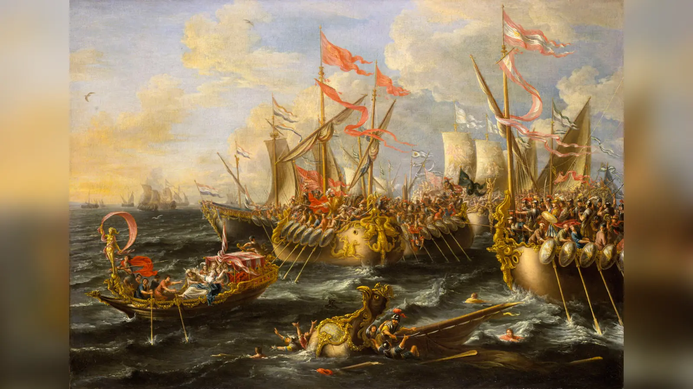
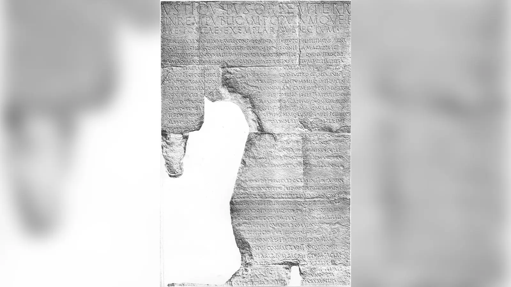
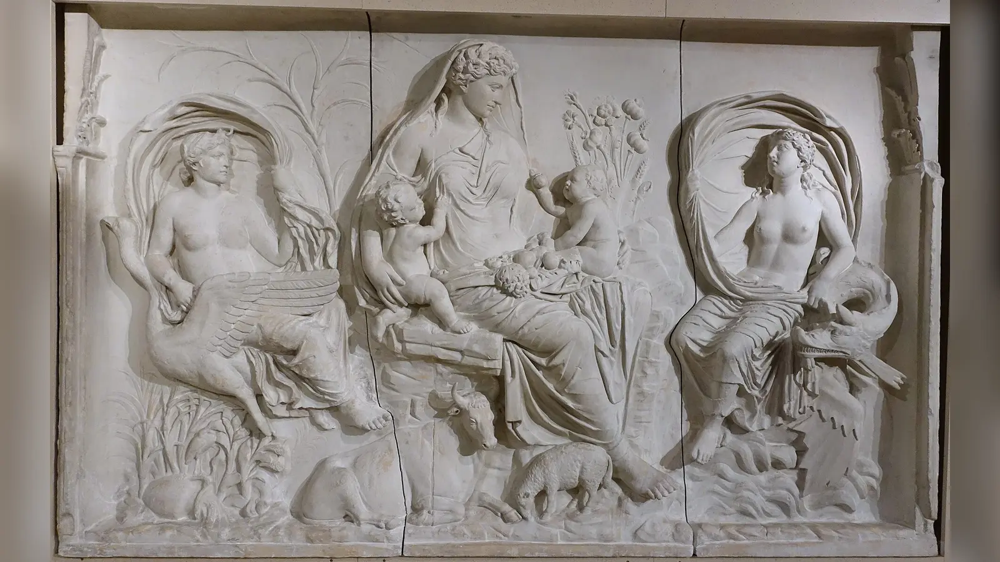

MÖ 27 yılının Ocak ayında Roma Senatosu’nun karşısına çıkan Octavianus, yaklaşık on beş yıldır iç savaşların, olağanüstü yetkilerin ve rakip tasfiyelerinin merkezinde bulunan bir adamdı. Julius Caesar’ın öldürülmesinden sonra henüz on dokuz yaşındayken siyasete girmiş, özel ordu toplamış, Marcus Antonius ve Lepidus ile birlikte kanlı proskripsiyonları yönetmiş, Brutus ile Cassius’u ortadan kaldıran koalisyonun parçası olmuş ve sonunda Antonius ile Kleopatra’yı yenerek Roma dünyasında rakipsiz kalmıştı. Şimdi ise gücü ele geçirdiğini değil, olağanüstü dönemin sona erdiğini söylüyordu. Kendi anlatımına göre devleti Senato’ya ve Roma halkına geri veriyordu.
Tam da burada Augustus döneminin temel çelişkisi başlar. Roma’nın krallık karşıtı siyasi kültürü hâlâ canlıydı. Julius Caesar’ın giderek artan kişisel iktidarı ve krallık şüpheleri, onun öldürülmesinin gerekçeleri arasında yer almıştı. Buna rağmen MÖ 27’den sonra ortaya çıkan düzen, eski Cumhuriyet’in geri dönüşü değildi. Senato toplantılarına devam etti, konsüller seçildi, halk meclisleri varlığını sürdürdü ve geleneksel magistralıkların çoğu ortadan kaldırılmadı. Fakat ordunun büyük bölümünü, en kritik eyaletleri, muazzam mali kaynakları, siyasi himaye ağını ve giderek daha kapsamlı yetkileri elinde birleştiren kişi Augustus’tu. Roma görünüşte cumhuriyetçi kurumlarını korurken fiilen tek bir kişinin üstün konumuna dayanan yeni bir rejime geçti.
Bu yüzden “Augustus Roma Cumhuriyeti’ni yıktı ve imparatorluğu kurdu” cümlesi hem doğru bir yönü yakalar hem de süreci gereğinden fazla basitleştirir. Cumhuriyet Augustus’tan çok önce sosyal çatışmalar, komutanların kişisel orduları, Sulla ve Caesar diktatörlükleri, siyasi şiddet ve art arda gelen iç savaşlarla ağır biçimde aşınmıştı. Augustus bu krizi yaratmadı. Onun tarihsel yeniliği, iç savaşlardan doğan olağanüstü kişisel gücü geçici bir zafer olarak bırakmamasıydı. Eski kurumları tamamen yok etmek yerine onları kendi üstünlüğüyle birlikte çalışabilecek biçimde yeniden düzenledi. Roma’nın “kral” kelimesinden nefret ettiği bir dünyada kral unvanını almadan bir kraldan daha güçlü olmanın yolunu buldu.
Augustus Kimdir?
Augustus MÖ 23 Eylül 63’te Gaius Octavius adıyla doğdu. Babası aynı adı taşıyan Gaius Octavius, senatörlük kariyerinde yükselmiş ve Makedonya valiliği yapmış bir Romalıydı. Annesi Atia ise Julius Caesar’ın kız kardeşi Julia’nın kızıydı. Böylece genç Octavius, Caesar’ın büyük yeğeniydi. Bu akrabalık başlangıçta ona Roma siyasetinin merkezinde otomatik bir yer vermiyordu; ailesi aristokratik dünyanın en eski ve en görkemli hanedanları arasında değildi. Fakat Caesar’ın yükselişi, genç akrabasının geleceğini değiştirdi.
Octavius genç yaşta Caesar’ın dikkatini çekti. Sağlığı her zaman güçlü değildi ve büyük askerî tecrübesi yoktu; buna rağmen Caesar’ın çevresinde giderek daha görünür hâle geldi. MÖ 45’te İspanya seferinin ardından Caesar’la buluşması, sonraki kariyeri açısından önem taşıdı. Caesar onu doğudaki planlanan Part seferi öncesinde Apollonia’ya gönderdi. Octavius burada askerî eğitim alırken MÖ 44 Mart’ında Roma’dan haber geldi: Caesar öldürülmüştü.
Burada isim meselesi özellikle önemlidir. Doğduğunda “Augustus” değildi; Gaius Octavius’tu. Caesar’ın vasiyetle evlat edinilmesini kabul ettikten sonra Caesar’ın adını aldı ve çağdaş siyasi hayatında kendisini Gaius Julius Caesar olarak sundu. Modern tarihçiler, onu diktatör Julius Caesar’dan ayırabilmek için bu dönemde genellikle “Octavianus” ya da Türkçede “Octavianus” adını kullanır. “Augustus” ise ancak MÖ 27’de Senato tarafından verilen onursal addır. Dolayısıyla MÖ 44’te Caesar’ın mirasını kabul eden “Augustus”tan söz etmek kronolojik olarak kolaylaştırıcı olsa da dönemin adlandırmasını bulanıklaştırır.
Genç Octavius’un en büyük avantajı soyundan çok, Caesar’ın ölümünden sonra açılan vasiyet oldu. Bu belge onu bir anda yalnız zengin bir mirasçı değil, Roma’nın öldürülmüş diktatörünün siyasi adını taşıyan kişi hâline getirecekti.
Octavianus Julius Caesar’ın Mirasçısı Nasıl Oldu?
Caesar’ın öldürüldüğü sırada Octavius İtalya’da değildi. Haberi Apollonia’da aldı ve kısa süre sonra Caesar’ın vasiyetinde başlıca mirasçı olarak gösterildiğini, ayrıca ölümünden sonra evlat edinildiğini öğrendi. Bu karar son derece riskli bir fırsat yaratıyordu. Caesar’ın adı olağanüstü prestij taşıyordu; aynı isim onu Caesar’ın düşmanlarının hedefi hâline de getirebilirdi. Ailesinden bazı kişilerin temkinli davranmasını istemesine rağmen mirası kabul etti ve İtalya’ya döndü.
Caesar’ın suikastçıları onun ölümünün Cumhuriyet’i eski düzenine döndüreceğini ummuşlardı. Fakat Caesar’ın askerleri, gazileri ve halk içindeki destekçileri ortadan kaybolmamıştı. Marcus Antonius konsüldü ve Caesar’ın en güçlü eski komutanlarından biriydi. Octavianus ise henüz resmî makamı, büyük askerî itibarı ve uzun siyasi kariyeri olmayan bir gençti.
Buna rağmen Caesar adını son derece etkili kullandı. Vasiyette Roma halkına bırakılan paranın ödenmesi konusunda Antonius’la yaşanan gerilim, Octavianus’a kendisini Caesar’ın mirasına daha sadık taraf gibi sunma fırsatı verdi. Caesar’ın gazileriyle bağ kurdu ve özel girişimle asker toplamaya başladı. Cumhuriyet hukukunun olağan işleyişi açısından bu durum başlı başına sorunluydu; fakat iç savaş çağında silahlı güç siyasi meşruiyetin ayrılmaz parçası hâline gelmişti.
Senato içindeki Antonius karşıtları da genç Caesar mirasçısını geçici bir araç olarak görmeye başladı. Cicero, Antonius’a karşı yürüttüğü siyasi kampanyada Octavianus’u destekledi. MÖ 43’te Mutina çevresindeki savaşlarda Octavianus senato kuvvetleriyle birlikte Antonius’a karşı savaştı. Konsüller Hirtius ve Pansa’nın ölmesi güç dengesini değiştirdi. Ordusu olan genç mirasçı artık kenara itilebilecek biri değildi. Roma üzerine yürüdü, konsüllüğü elde etti ve Caesar’ın katillerine karşı yasal süreci sertleştirdi.
Henüz bir yıl önce tecrübesiz bir genç olan Octavianus’un yükselişinde temel yöntem şimdiden görülüyordu: Caesar adının meşruiyetini, askerî sadakati, rakip gruplar arasındaki çatışmayı ve resmî makamları aynı anda kullanmak. Fakat asıl kanlı aşama henüz başlamamıştı.
İkinci Triumvirlik ve İktidar Yolundaki Şiddet
MÖ 43 sonbaharında Octavianus, Marcus Antonius ve Marcus Aemilius Lepidus uzlaştı. Kurdukları İkinci Triumvirlik, Caesar, Pompeius ve Crassus’un önceki gayriresmî siyasi ortaklığından farklıydı. Triumviri rei publicae constituendae adıyla yasallaştırılan bu düzen, üç adama devleti yeniden düzenlemek için olağanüstü yetkiler verdi. Cumhuriyet’in normal makamları yaşamaya devam ederken onların üzerinde fiilî ve hukuki açıdan çok güçlü bir üçlü yönetim oluştu.
Yeni ortaklığın en karanlık yüzü proskripsiyonlardı. Devlet düşmanı ilan edilen kişilerin isimleri listelere yazılıyor, öldürülmeleri ödüllendiriliyor ve mülklerine el konuluyordu. Tasfiyeler yalnız intikam değildi; savaşların finansmanı, servetin yeniden dağıtılması ve siyasi muhalefetin kırılması da bu şiddetin parçasıydı. En ünlü kurbanlardan biri Cicero oldu. Antonius’un Cicero’ya özel düşmanlığı belirgindi, fakat Octavianus’un sonraki imajını korumak adına onu proskripsiyonların masum veya güçsüz seyircisi gibi göstermek doğru değildir. Triumvirlik kolektif bir şiddet rejimiydi ve Octavianus onun üç yöneticisinden biriydi.
MÖ 42’de Antonius ve Octavianus’un kuvvetleri Makedonya’daki Philippi’de Brutus ve Cassius’un ordularıyla karşılaştı. Askerî başarının büyük bölümünde Antonius’un rolü öne çıktı; Octavianus’un sonraki propaganda dünyası genç liderin bütün zaferlerini tek başına kazanmış gibi algılanmasına yol açabilse de gerçek yükselişi yetenekli ortaklara ve komutanlara sürekli bağımlıydı. Brutus ve Cassius’un yenilgisi Caesar suikastının ardından eski Cumhuriyet adına örgütlenen en güçlü askerî direnişi sona erdirdi.
Zafer barış getirmedi. Gazilere toprak dağıtılması İtalya’da ağır toplumsal gerilim yarattı, mülklere el konuldu ve Perusia Savaşı yeni bir iç çatışmaya dönüştü. Octavianus’un ileride “barışın kurucusu” olarak oluşturacağı imajı anlamak için bu erken dönemi unutmamak gerekir. Augustus’un istikrarı gerçekti, fakat o istikrara giden yol proskripsiyonlar, iç savaşlar ve zor kullanılarak gerçekleştirilen servet transferleriyle döşenmişti.
Octavianus Rakiplerini Nasıl Ortadan Kaldırdı?
Philippi’den sonra Roma dünyasının paylaşılması yeni rakiplikler üretti. Antonius doğuya yönelirken Octavianus batıda güç kazandı. Sicilya’yı kontrol eden Sextus Pompeius, deniz yollarını tehdit ediyor ve Roma’nın tahıl tedarikini baskı altına alabiliyordu. Octavianus’un ona karşı ilk girişimleri başarılı değildi. Burada Marcus Vipsanius Agrippa’nın önemi açık biçimde ortaya çıktı.
Agrippa, Octavianus’un çocukluk çevresinden gelen en güvenilir adamlarından biriydi ve olağanüstü bir askerî-organizasyon yeteneğine sahipti. Donanmayı yeniden yapılandırdı, Naulochus yakınındaki deniz zaferinde Sextus Pompeius’un gücünü kırdı ve Octavianus’un batıdaki hâkimiyetini güvenceye aldı. Augustus’un sonraki başarılarını yalnız “büyük liderin dehası” şeklinde anlatmak Agrippa’nın, Maecenas’ın ve başka seçkin yardımcıların rolünü siler. Augustus’un güçlü yanlarından biri, yetenekli insanları seçip uzun süre kullanabilmesiydi.
Sextus Pompeius’un tasfiyesinden sonra Lepidus da etkisizleştirildi. Lepidus’un birlikleri üzerinde kontrol kurmaya çalışması başarısız oldu; askerleri Octavianus tarafına geçti. Hayatı bağışlandı ve pontifex maximus unvanını ölümüne kadar korudu, fakat siyasi ağırlığı sona erdi. Böylece triumvirlerden geriye iki gerçek güç kaldı: batıda Octavianus, doğuda Antonius.
İki adam arasındaki ilişki yıllarca evlilik, antlaşma ve karşılıklı çıkarlarla korunmaya çalışıldı. Antonius’un Octavianus’un kız kardeşi Octavia ile evliliği bu uzlaşmanın parçasıydı. Fakat Antonius’un doğuda Kleopatra ile ilişkisini yeniden kurması, çocukları ve İskenderiye’deki siyasi düzenlemeleri Octavianus’a giderek daha etkili bir propaganda malzemesi verdi. Son mücadele yalnız iki komutanın kişisel düşmanlığı değildi; Roma dünyasının iç savaşlardan sonra kimin etrafında yeniden kurulacağı sorusuydu.
Actium Savaşı: Antonius ve Kleopatra’ya Karşı Son Mücadele
Octavianus’un Antonius’a karşı propaganda başarısı, yeni iç savaşı “Romalı Romalıya karşı” görüntüsünden uzaklaştırabilmesiydi. Antonius hâlâ Roma’nın seçkin komutanlarından biriydi ve geniş bir destek ağına sahipti. Onu doğrudan düşman ilan etmek Caesar’ın ölümünden beri süren iç savaşların bir yenisini başlatan taraf gibi görünme riskini taşıyordu. Kleopatra ise yabancı bir hükümdardı. Octavianus bu nedenle çatışmayı Mısır kraliçesinin Roma’ya yönelik tehdidi olarak çerçevelemeye büyük önem verdi.

Antonius’un Kleopatra’dan olan çocuklarına doğu toprakları üzerinde unvanlar verdiği “İskenderiye Bağışları”, bu anlatı için güçlü malzeme sağladı. Octavianus ayrıca Antonius’un vasiyetini ele geçirdiğini iddia ederek içeriğini kamuoyuna sundu; vasiyetin Vestal bakirelerinin korumasından çıkarılmasının hukuki ve siyasi boyutları tartışmalıydı, fakat propaganda etkisi büyüktü. Antonius’un İskenderiye’ye gömülmek istemesi gibi iddialar, onun Roma’dan uzaklaşıp Kleopatra’nın etkisine girdiği düşüncesini besledi.
Bu kampanya Kleopatra’yı yalnız “baştan çıkarıcı doğulu kraliçe” olarak kabul etmemizi gerektirmez. Kleopatra, Ptolemaios Mısırı’nın hükümdarı olarak kendi hanedanının çıkarlarını korumaya çalışan siyasi bir aktördü. Octavianus’un başarısı, onun bu gerçek siyasi gücünü Roma kamuoyunda yabancı tehdit imgesine dönüştürmesiydi.
MÖ 31’de Actium açıklarındaki mücadele de yalnız romantik bir “Antonius Kleopatra’nın peşinden gitti ve savaşı kaybetti” sahnesine indirgenemez. Agrippa, çatışma öncesinde limanlara ve ikmal hatlarına baskı kurarak Antonius ile Kleopatra’nın kuvvetlerini stratejik açıdan zorladı. 2 Eylül’deki deniz savaşında Antonius-Kleopatra filosunun bir bölümü kuşatmayı yararak Mısır’a çekildi; kalan güçlerin çözülmesi Octavianus’un zaferini kesinleştirdi. Ertesi yıl Mısır işgal edildi. Antonius ve Kleopatra intihar etti, Ptolemaios krallığı sona erdi ve Mısır Roma kontrolüne geçti.
Actium’un asıl sonucu, Octavianus’un artık denk bir rakibinin kalmamasıydı. MÖ 30’dan sonra Roma dünyasında büyük bir iç savaş ordusuna komuta eden ikinci bir triumvir yoktu. Fakat bu kez Caesar’ın yaptığı gibi olağanüstü üstünlüğünü açık uçlu bir diktatörlük biçiminde göstermeyecekti.
Octavianus Ne Zaman Augustus Oldu?
MÖ 27’de Octavianus, iç savaşların sona erdiğini ve olağanüstü yetkilerin normalleşmesi gerektiğini ilan eden bir siyasi düzenlemeye girişti. Daha sonra Res Gestae’de, altıncı ve yedinci konsüllüklerinde iç savaşları söndürdükten sonra devleti kendi gücünden Senato ve Roma halkının tasarrufuna aktardığını yazacaktı. Bu ifade Augustus’un kendi öz sunumudur; tarafsız bir anayasa tutanağı gibi okunmamalıdır.
Senato ona “Augustus” unvanını verdi. Sözcük kutsallık, yücelik ve saygınlık çağrışımları taşıyordu; doğrudan “kral” demeden sahibini sıradan aristokratların üzerinde konumlandırıyordu. “Princeps” ise “önde gelen”, “ilk vatandaş” fikrine yaslanıyordu. Augustus kendisini modern anlamda resmî bir “Roma imparatoru” unvanıyla taçlandırmadı. Imperator askerî zafer ve komuta geleneğiyle ilişkiliydi; Augustus bunu adının kalıcı bir parçasına dönüştürdü. Modern tarihçilerin onu “Roma’nın ilk imparatoru” diye adlandırması, kurduğu sistemin niteliğini anlatmak açısından anlamlıdır, fakat dönemin resmî siyasi dilini bire bir yansıtmaz.

MÖ 27’deki düzenleme tek günde imparatorluk kuran bir anayasa değildi. Augustus belirli stratejik eyaletleri yönetmek üzere geniş bir eyalet komutasını elinde tuttu. Senato da başka eyaletlerin yönetiminde rolünü sürdürdü. Kritik fark, ordunun büyük bölümünün bulunduğu sınır eyaletlerinin Augustus’un komuta alanında olmasıydı. Cumhuriyet’in biçimleri geri dönmüş görünürken zorlayıcı gücün ana kaynağı onun elinde kalıyordu.
Augustus Cumhuriyeti Nasıl İmparatorluğa Dönüştürdü?
Augustus’un kurduğu düzenin dayanıklılığı tek bir makamdan değil, farklı yetki ve nüfuz kaynaklarının aynı kişide birleşmesinden doğdu. Roma’da “kral” diye tanımlanabilecek tek bir yeni makam oluşturmak yerine Cumhuriyet’in tanıdığı hukuki araçları kullandı, sürelerini ve kapsamlarını olağanüstü hâle getirdi ve bunları kişisel auctoritasıyla tamamladı. Bu nedenle principatus hem tanıdık hem yeniydi.
MÖ 27’de Augustus İspanya, Galya ve Suriye gibi büyük askerî kuvvet gerektiren bölgeleri kapsayan geniş eyalet sorumluluğunu belirli bir süre için üstlendi. Daha sakin kabul edilen başka eyaletler Senato’ya bağlı prokonsüller tarafından yönetildi. Görünüşte paylaşım vardı; pratikte ise lejyonların çoğu Augustus’un eyaletlerinde bulunuyordu. Bir Roma siyasetçisinin gerçek gücünün son yüzyılda ordularla ne kadar yakından bağlantılı olduğu düşünüldüğünde bu ayrım belirleyiciydi. Profesyonelleşen askerî yapı yalnız sınır savunmasının değil, princeps’in iktidarının da temeliydi.
Augustus ilk yıllarda arka arkaya konsül seçildi. Konsüllük ona Cumhuriyet’in en prestijli yıllık makamının meşruiyetini sağlıyor, fakat sürekli aynı kişinin konsül olması aristokratların kariyer yollarını daraltıyordu. MÖ 23’te ciddi bir siyasi ve anayasal yeniden ayarlama yapıldı. Augustus düzenli konsüllükten çekildi; buna karşılık tribünlük yetkileri, yani tribunicia potestas, siyasi konumunun kalıcı sütunlarından biri hâline geldi. Bu ona halk tribünü makamını teknik anlamda sürekli işgal etmeden tribünlüğün dokunulmazlık, halkla ilişki, yasama ve müdahale kapasitesini kullanma imkânı veriyordu.
Aynı düzenleme çevresinde prokonsüler komuta yetkisinin üstün niteliği güçlendirildi. Modern literatürde genellikle imperium proconsulare maius olarak açıklanan bu konum, Augustus’un kendi eyaletleri dışındaki prokonsüllere göre üstün komuta yetkisine sahip olmasını sağladı. Ayrıntıların antik kaynaklarda eksik olması nedeniyle teknik formülasyon konusunda akademik tartışmalar vardır; önemli olan sonuçtur: Augustus, Roma’nın eyalet ve ordu düzeninde diğer valilerin üzerinde müdahale kapasitesini koruyordu.
Senato da ortadan kalkmadı. Augustus onun üyeliğini düzenledi, zaman zaman sayısını ve bileşimini gözden geçirdi, toplantılarda büyük nüfuz kullandı ve princeps senatus geleneğinin prestijinden yararlandı. Senatörler konsül, praetor ve vali olmaya devam etti. Bu durum yalnız vitrin değildi; imparatorluk yönetimi aristokrat seçkinlerin hizmetine ihtiyaç duyuyordu. Fakat senatörlerin kariyerleri artık Augustus’un himayesinden, tavsiyesinden ve rejimle uyumlarından bağımsız düşünülemezdi.
Halk meclisleri ve seçimler de bir anda yok olmadı. Cumhuriyetçi makamlar için seçim yapılmaya devam edildi, fakat Augustus’un adaylara desteği ve siyasi nüfuzu sonuçlar üzerinde ağırlaştı. Roma’nın eski rekabetçi aristokratik siyaseti tamamen sona ermese de serbestlik alanı daraldı. Hiçbir senatör, arkasında eyalet orduları ve Caesar mirası bulunan princeps’le eşit bir siyasi rekabete giremiyordu.
Mali güç de önem taşıyordu. Augustus’un kişisel serveti, Mısır’ın kontrolü, eyalet gelirleri ve askerî harcamaları finanse etme kapasitesi onu yalnız hukuki yetkilerle açıklanamayacak bir patronaj merkezine dönüştürdü. Askerlere ödeme, gazilere yerleşim, halka yapılan dağıtımlar, yapı projeleri ve seçkinlerin kariyerleri rejimin maddi ağlarıyla bağlantılıydı. Res Gestae Augustus’un kendi cebinden yaptığı harcamaları özellikle vurgular; bu övünme aynı zamanda devlet ile princeps’in kaynaklarının ne kadar iç içe geçtiğini gösterir.
Augustus MÖ 27’de “Cumhuriyeti geri verdiğini” söyleyebilirdi, çünkü diktatörlük ve triumvirlik gibi olağanüstü rejim biçimlerinden çekilmiş, geleneksel kurumların çalışmasına izin vermişti. Fakat Cumhuriyet’in eski temel ilkelerinden biri olan güçlerin farklı magistralar arasında kısa sürelerle paylaşılması artık aynı anlamı taşımıyordu. Augustus’un prokonsüler komutası, tribünlük yetkisi, askerî üstünlüğü, serveti, dini makamları ve benzersiz auctoritası bir araya geldiğinde başka hiçbir yurttaşın eşleşemeyeceği bir konum ortaya çıkıyordu. Monarşik gerçeklik tek bir taçta değil, yetkilerin toplamında saklıydı.
Augustus Neden Kral Olmadı?
Roma’nın son kralı Tarquinius Superbus’un kovulmasına ilişkin gelenek, Cumhuriyet kimliğinin kurucu hikâyelerinden biriydi. Yüzyıllar sonra “rex” kelimesi hâlâ siyasi açıdan zehirli olabilirdi. Julius Caesar’ın öldürülmesinden önce yaşanan taç ve krallık söylentileri, tek adam iktidarının ne kadar tehlikeli algılanabildiğini göstermişti. Augustus bu hafızayı çok iyi kullandı.
“Caesar’ın hatasını tekrarlamadı” demek tek başına yeterli değildir. Augustus’un yaptığı daha somuttu: sürekli diktatör unvanı almadı, krallığı reddeden dili korudu, Senato’ya törensel ve gerçek idari roller bıraktı, aristokratların makam sahibi olmaya devam etmesini sağladı ve kendi üstünlüğünü geleneksel yetkilerin bileşimi olarak sundu. Evini ve kişisel görünümünü de aşırı Helenistik saray gösterişinden uzak tutan bir Roma aristokratı imajı üretmeye çalıştı.
Bu tevazu görüntüsü gerçek güçten vazgeçmek anlamına gelmiyordu. Tam tersine rejimin güvenliğini artırıyordu. Caesar’ın açık üstünlüğü komploculara Cumhuriyet’in öldüğü hissini vermişti; Augustus’un sistemi ise seçkinlere hâlâ konsül, vali, rahip ve senatör olabilecekleri bir dünya sunuyordu. En yüksek iktidar paylaşılmıyordu, fakat statü ve kariyer paylaşılabiliyordu.
Augustus’un Propagandası ve İmaj Yönetimi
Augustus’un iktidarı yalnız hukuk ve lejyonlarla kurulmadı. Roma halkının iç savaşlardan ne anlam çıkardığı, yeni düzeni nasıl gördüğü ve Caesar’ın genç mirasçısının hangi hikâyenin kahramanı olarak hatırlanacağı da önemliydi. Bu yüzden edebiyat, sikke, heykel, tapınak, zafer anıtı ve kamusal mimari Augustus döneminde birbirini tamamlayan bir siyasi kültür oluşturdu.
Res Gestae Divi Augusti bunun en açık örneklerinden biridir. Augustus yaşamının sonunda başarılarını, harcamalarını, makamlarını, savaşlarını ve onurlarını kendi seçtiği çerçevede sıraladı. Metin olağanüstü değerli bir birincil kaynaktır; aynı nedenle tarafsız değildir. Proskripsiyonların dehşetini veya rakiplerinin bakışını anlatmak için yazılmamıştır. Augustus burada kendisini devleti bir hizbin baskısından kurtaran, iç savaşları sona erdiren, onurları ölçülü biçimde kabul eden ve Cumhuriyet’i Senato ile halka geri veren kişi olarak sunar. Metni tarihsel gerçekliğin kendisi değil, Augustus’un gelecek kuşakların hangi gerçekliği hatırlamasını istediğinin belgesi olarak okumak gerekir.
Görsel kültür de aynı ölçüde güçlüydü. Prima Porta Augustus heykelinde hükümdar askerî komutan olarak idealize edilmiş, çıplak ayak ve ilahi çağrışımlar, göğüs zırhındaki diplomatik-askerî mesajlar ve yanında yer alan Cupid figürü Julian soyunun Venus bağlantısını hatırlatan bir kompozisyon yaratmıştır. Augustus yaşlandığında bile portrelerinde çoğu kez zamansız ve genç bir yüzle gösterildi. Bu yalnız fiziksel güzelleştirme değildi; rejimin sürekli genç, düzenli ve sarsılmaz görünmesini sağlayan bir hükümdarlık diliydi.
Caesar’ın ölümünden sonra tanrılaştırılması Octavianus’a güçlü bir soyutlama aracı verdi. Kendini Divi Filius, “tanrılaştırılmış olanın oğlu” diye sunabiliyordu. Böylece siyasi evlatlık ilişkisi kozmik bir meşruiyet çağrışımı kazandı. Caesar’ın cenaze oyunları sırasında görüldüğü anlatılan kuyruklu yıldız da sikkeler ve imgeler aracılığıyla bu ilahi yükselişle ilişkilendirildi.
Vergilius’un Aeneis destanı Roma’nın kökenini Troia’ya, Aeneas’a ve ilahi kadere bağlayan çok daha geniş bir kültürel dünya kurdu. Eseri yalnız “Augustus’un sipariş ettiği propaganda” diye küçültmek, şiirin edebî karmaşıklığını ve içindeki kayıp, savaş ve iktidar gerilimlerini görmezden gelir. Yine de Aeneas’ın soyundan Augustus dönemine uzanan tarihsel kader fikri yeni rejimin Roma kimliğiyle uyumlu okunmasına büyük katkı sağladı. Horatius’un şiirleri ve Maecenas çevresindeki edebî üretim de iç savaş sonrası düzen, ahlak, zafer ve Roma’nın yenilenmesi üzerine ortak bir kültürel dil geliştirdi.

Ara Pacis Augustae bu dilin taşa dönüşmüş hâlidir. MÖ 13’te Augustus’un batı eyaletlerinden dönüşü vesilesiyle kararlaştırılan ve MÖ 9’da adanan sunak, barış fikrini aile, din, bereket ve Roma’nın devamlılığıyla ilişkilendirir. “Barış” burada savaşın yokluğu kadar Roma’nın düzen kurma gücünün sonucu olarak sunulur. Tapınak restorasyonları, forum projeleri, sikkeler ve yazıtlar da benzer biçimde yeni rejimi devrim olarak değil Roma’nın ahlaki ve dini yenilenmesi olarak görünür kıldı.
Augustus Döneminde Roma Nasıl Değişti?
İç savaşların sona ermesi Augustus’a onlarca yıl süren idari düzenleme fırsatı verdi. Savaş yıllarında sayıları büyük ölçüde artmış lejyonlar terhisler ve birleşmeler yoluyla azaltıldı; erken Principatus’un ordusu yaklaşık yirmi sekiz lejyonluk daha kalıcı bir yapıya oturdu. Askerlik giderek uzun süreli profesyonel hizmet niteliği kazandı. Hizmet süresi ve emeklilik ödemeleri düzenlendi; MS 6’da aerarium militare adı verilen askerî hazine kurularak veteran ödemelerine daha düzenli mali temel sağlandı.
Praetorian Muhafızları da rejimin askerî mimarisinin parçasıydı. Cumhuriyet komutanlarının karargâh muhafızlarından gelişen birlikler Augustus döneminde princeps’in güvenliği için daha kurumsal bir biçim kazandı. Augustus onların tümünü başlangıçta Roma merkezine tek kışlada yığmadı; bu daha sonraki bir gelişmeydi. Yine de imparatorluk merkezinde hükümdara bağlı seçkin askerî gücün temeli atılmıştı. Sonraki yüzyıllarda Praetorianların imparatorların yükseliş ve düşüşünde oynayacağı rol, Augustan düzenin beklenmeyen miraslarından biri olacaktı.
Eyalet yönetiminde vergi toplama ve valilik denetimi daha düzenli hâle getirildi. İmparatorluk yolları yalnız askerî hareket için değil, haberleşme ve yönetim için de önem kazandı. Devlet haberleşme sistemi olarak gelişen cursus publicus imparatorluk merkezinin eyaletlerle bağlantısını güçlendirdi. Roma kentinin kendisinde mahalle düzenlemeleri, yangınla mücadele ve gece güvenliği için yeni örgütlenmeler yapıldı; MS 6’da vigiles kalıcı bir yangın ve gece güvenliği kuvvetine dönüştü.
Augustus’un yapı programı rejimin fiziksel yüzünü değiştirdi. Forum Augustum, Mars Ultor Tapınağı ve çok sayıda restorasyon projesi eski Roma’yla yeni yönetim arasında bağ kurdu. Suetonius’un aktardığı “Roma’yı tuğladan buldum, mermerden bıraktım” sözü bu dönüşümün meşhur özeti oldu. Bunu kelimesi kelimesine bütün şehrin tuğladan mermer kente dönüştürülmesi olarak okumamak gerekir. İfade Augustus’un kamusal yapı faaliyetlerinin ve kentsel görkem politikasının idealleştirilmiş özeti olarak daha anlamlıdır.
Bu reformların arkasındaki orduyu da tek bir kişinin eseri gibi görmemek gerekir. Augustus’un sistemi Cumhuriyet’in yüzyıllar boyunca geliştirdiği askerî kurumların üzerine kuruldu. Kalıcı sınır ordularının princeps’e bağlanması ise siyasi sonucu değiştirdi: Roma’nın en büyük örgütlü silahlı gücü artık yıllık magistraların geçici komutasından çok imparatorluk makamının sürekliliğiyle ilişkilendiriliyordu.
Augustus’un Aile ve Ahlak Politikaları
Augustus yalnız devleti değil Roma seçkinlerinin aile hayatını da düzenlemeye çalıştı. MÖ 18–17 civarında çıkarılan evlilik ve zina yasaları, üst sınıflarda evlenmeyi ve çocuk sahibi olmayı teşvik ederken belirli evlilik dışı cinsel ilişkileri kamu hukukunun konusu hâline getirdi. Daha sonra Papia Poppaea düzenlemeleri bu politikayı geliştirdi. Amaç yalnız “ahlakı düzeltmek” değildi; aristokrat ailelerin devamlılığı, miras düzeni ve Roma yurttaş elitinin yeniden üretimi rejimin siyasi kaygıları arasındaydı.
Bu programın en çarpıcı krizi Augustus’un kendi ailesinde yaşandı. Kızı Julia MÖ 2’de zina suçlamalarıyla sürgüne gönderildi. Antik kaynakların skandal ayrıntıları ihtiyatla değerlendirilmelidir, fakat Augustus’un kendi ahlak yasalarının ailesine dönmesi siyasi açıdan son derece güçlü bir görüntüdür. Princeps kamusal düzenin koruyucusu olarak sunduğu normları kızına uygulayarak tutarlılık göstermek isteyebilirdi; aynı olay aile içindeki kırılmayı ve rejimin ahlak siyasetinin sertliğini de ortaya koydu.
Livia Drusilla’nın rolü de klişelerden ayrılmalıdır. Augustus’un uzun süreli eşi olan Livia, imparatorluk ailesinin kamusal imajında, hanedan bağlantılarında ve saray çevresinde etkili bir figürdü. Olağanüstü onurlar aldı ve sonraki dönemde “Augusta” olarak daha da yüksek statü kazandı. Buna karşılık antik anlatılarda görülen, Augustus’un muhtemel varislerini tek tek zehirleyerek kendi oğlu Tiberius’a yol açan entrikacı kadın portresini kanıtlanmış gerçek saymak mümkün değildir. Saray siyasetinde etkili olması ile seri cinayetler işlemiş olması birbirinden tamamen farklı iddialardır.
Augustus’un aile politikası burada temel bir paradoks üretir. Cumhuriyet’i restore ettiğini söyleyen rejim, iktidarın devamı için giderek tek bir hanenin evliliklerine, doğumlarına ve evlat edinmelerine bağımlı hâle geliyordu. Roma resmen krallık değildi; buna rağmen princeps’in ailesi devletin geleceği meselesine dönüşmüştü.
Pax Augusta Gerçekten Barış Dönemi miydi?
Augustus dönemi sık sık Pax Romana’nın başlangıcı olarak anlatılır. Bu kavramın en anlamlı tarafı, yaklaşık bir yüzyıl boyunca Roma siyasetini tekrar tekrar parçalayan büyük iç savaşların sona ermesidir. İtalya’da orduların birbirleriyle savaşması, proskripsiyonlar ve rakip Roma hükümetleri Augustus’un tek hâkimiyetinden sonra yerini daha istikrarlı bir merkezî düzene bıraktı. Roma yurttaşlarının önemli bölümü için bu değişimin değeri küçümsenemez.
Fakat “barış” imparatorluğun savaşmayı bıraktığı anlamına gelmez. Augustus döneminde kuzeybatı İspanya’daki Kantabria ve Asturya savaşları sürdü; Alpler ve Balkanlar’da Roma hâkimiyeti genişletildi; Tuna hattı daha büyük önem kazandı ve Germanya’da Ren’in ötesine uzanan seferler yapıldı. Diplomasi de askerî güçle birlikte kullanıldı. Partların daha önce ele geçirdiği Roma sancaklarının MÖ 20’de geri alınması büyük bir propaganda zaferi olarak sunuldu; bu sonuç geniş çaplı bir fetih savaşından çok diplomatik baskı ve müzakereyle elde edilmişti.
Bu nedenle Pax Augusta’nın kimin barışı olduğu sorusu önemlidir. Roma’nın merkezinde iç savaşın bitmesi düzen ve güvenlik demekti. Roma ordularının ilerlediği toplumlar açısından aynı dönem işgal, vergi, askerî harekât ve siyasi bağımlılık anlamına gelebiliyordu. Augustus’un barış ideolojisi Roma egemenliğini barışın ön koşulu olarak tanımlıyordu.
Teutoburg Ormanı Felaketi Augustus’u Nasıl Etkiledi?
Augustus’un düzeninin sınırları MS 9’da Germanya’da dramatik biçimde ortaya çıktı. Publius Quinctilius Varus’un komutasındaki XVII, XVIII ve XIX. lejyonlar ile yardımcı kuvvetler, Cherusci kökenli Arminius’un önderlik ettiği koalisyon tarafından pusuya düşürüldü. Arminius Roma sistemini yakından tanıyordu; Roma vatandaşlığına ve askerî deneyime sahipti. Zorlu arazi ve dağınık yürüyüş düzeni içinde Roma kuvvetleri birkaç gün süren saldırılar sonucunda yok edildi, Varus intihar etti.
Üç lejyonun kaybı Augustus döneminin en ağır askerî felaketlerinden biriydi. Suetonius, Augustus’un aylarca saç ve sakalını kesmediğini ve zaman zaman “Quintili Vare, legiones redde!” yani “Quintilius Varus, lejyonlarımı geri ver!” diye haykırdığını anlatır. Bu unutulmaz sahne Suetonius’un Augustus biyografisinden gelir; olaydan çok sonra kaleme alınmış bir biyografik anlatının dramatik ayrıntısı olduğu için sözleri bire bir kaydedilmiş bir ifade gibi kabul etmemek gerekir.
Yenilgi Roma’nın Germanya politikasında önemli bir kırılmaydı. Roma Ren’in doğusundan tamamen çekilip bir daha hiç askerî harekât yapmadı demek doğru değildir; Tiberius ve daha sonra Germanicus bölgede seferler yürüttü. Fakat Elbe’ye kadar kalıcı bir eyalet sistemi kurma hedefi gerçekleşmedi ve Ren hattı imparatorluk sınırının temel eksenlerinden biri olarak kaldı. Teutoburg, Augustus’un propaganda dünyasındaki yenilmezlik görüntüsünün arkasında imparatorluk genişlemesinin ciddi sınırları olduğunu gösterdi.
Augustus’un Varis Sorunu
Augustus’un kurduğu rejim istikrarlı görünüyordu, fakat tek bir sorunun net cevabı yoktu: Augustus öldüğünde onun benzersiz yetki bileşimi kime geçecekti? Cumhuriyetçi dil nedeniyle açık bir “taht” yoktu; buna rağmen sistem bir princeps’in varlığına alışmıştı. Bu çelişki Augustus’un hayatı boyunca süren halef arayışını şekillendirdi.
İlk önemli adaylardan biri kız kardeşi Octavia’nın oğlu ve Augustus’un damadı Marcellus’tu. Genç yaşta ölmesi planları değiştirdi. Agrippa yalnız en başarılı komutan değil, hanedanın merkezindeki kişi hâline geldi; Augustus’un kızı Julia ile evlendi ve çocukları geleceğin muhtemel varisleri olarak yetiştirildi. Agrippa’nın MÖ 12’de ölümü yeni bir boşluk yarattı.
Gaius ve Lucius Caesar, Augustus tarafından evlat edinildi ve kamuoyunda geleceğin liderleri olarak öne çıkarıldı. İkisinin de genç yaşta ölmesi hanedan planını yeniden çökertti. Agrippa Postumus da evlat edinilmiş olmasına rağmen gözden düştü ve sürgüne gönderildi. Böylece Livia’nın önceki evliliğinden olan Tiberius giderek en güçlü seçenek hâline geldi.
MS 4’te Augustus Tiberius’u evlat edindi; aynı düzen içinde Tiberius’un da Germanicus’u evlat edinmesi istendi. Tiberius askerî ve idari açıdan son derece deneyimliydi, fakat onun seçimini Augustus’un gençliğinden beri hazırladığı kusursuz planın son adımı gibi göstermek yanlış olur. Tiberius’a giden yol, Marcellus, Agrippa, Gaius, Lucius ve Agrippa Postumus gibi başka ihtimallerin ölüm veya tasfiyeyle ortadan kalkmasının sonucuydu.
Bu ardıllık sorunu Principatus’un temel zayıflıklarından birini açığa çıkardı. Cumhuriyetçi biçimler “imparatorluk veraset yasası” oluşturmayı zorlaştırıyor, fakat ordular ve eyaletler merkezde güçlü bir princeps bekliyordu. İlerleyen yüzyıllarda iktidarın şiddet yoluyla el değiştirmesinde bu belirsizliğin payı büyük olacaktı.
Augustus Nasıl Öldü?
Augustus MS 14 yılında, yaklaşık yetmiş beş yaşındayken Campania’daki Nola’da öldü. Elli yıla yaklaşan siyasi kariyeri boyunca Cumhuriyet’in son iç savaşlarından tek hâkimiyet dönemine kadar Roma’nın bütün rejim değişimini yaşamıştı. Ölümüne ilişkin antik anlatılar, hayatının diğer bölümlerinde olduğu gibi tarih ile edebî sahnelemeyi birbirine karıştırır.
Suetonius, Augustus’un ölümünden önce yakınlarına hayat komedisini iyi oynayıp oynamadığını sorduğu ve oyunu alkışlamalarını istediği yönünde bir gelenek aktarır; aynı eserde başka son sözler ve aile üyeleriyle vedalaşma ayrıntıları da bulunur. Bunları stenografik biçimde kaydedilmiş kesin ölüm döşeği sözleri gibi kullanmak doğru değildir. Augustus’un son anları daha sonraki biyografi geleneğinde karakterini özetleyen edebî bir sahneye dönüştürülmüş olabilir.
Tacitus daha kuşkucu bir siyasi atmosfer aktarır ve Livia’nın Augustus’un ölümünü bir süre gizlediğine ilişkin söylentilere yer verir. Daha sansasyonel gelenekler Livia’nın Augustus’u zehirlediğini öne sürer. Bu iddiayı doğrulayacak sağlam bağımsız kanıt yoktur. Yaşlı ve dönem dönem sağlık sorunları yaşamış bir adamın doğal ölümü tarihsel olarak olağandışı değildir; Livia cinayetini kesin gerçek diye anlatmak kaynakların taşıyamayacağı bir iddiadır.
Augustus’un ölümünün ardından Tiberius iktidarı devraldı. Senato Augustus’u tanrılaştırdı ve Divus Augustus kültü yeni rejimin meşruiyetine eklendi. Asıl test buydu: Augustus’un kurduğu sistem kurucusuyla birlikte ölecek miydi? Tiberius’un principatusu devralabilmesi, yeni düzenin yalnız Augustus’un kişisel diktatörlüğü olmaktan çıkıp tekrarlanabilir bir yönetim makamına dönüşmeye başladığını gösterdi.
Augustus Roma İçin Kahraman mıydı, Diktatör müydü?
Augustus’u “kahraman” ya da “diktatör” diye tek kelimelik bir hükme kapatmak, hem Roma’daki kazanımları hem bunların bedelini görünmez kılar. Onun yönetimi iç savaşların sona ermesinden sonra onlarca yıllık siyasi istikrar sağladı; eyalet yönetimini, ordu finansmanını, şehir güvenliğini ve merkezî idareyi daha sürdürülebilir hâle getirdi. Roma’nın anıtsal görünümü değişti, Akdeniz dünyasında uzun süre yaşayacak bir yönetim çerçevesi kuruldu.
Aynı adam iktidara proskripsiyonların ortağı olarak yükseldi, rakiplerini savaşlarla tasfiye etti, seçim rekabetinin serbestliğini daralttı ve Cumhuriyet’in gerçek güç paylaşımını geri getirmedi. Augustus döneminde Senato vardı, fakat Augustus’a denk değildi. Seçimler vardı, fakat princeps’in nüfuzundan bağımsız değildi. Cumhuriyetçi özgürlük dili vardı, fakat rejimin askerî temeli tek kişinin komutasında yoğunlaşmıştı.
Modern “diktatör” kelimesi ayrıca Roma’nın kendi dictator makamıyla karışabilir. Augustus sürekli diktatörlük makamını kullanmadı ve hatta kendisine teklif edildiğini söylediği bazı olağanüstü makamları reddettiğini özellikle vurguladı. “Monarşi” kavramı rejimin tek kişilik üstünlüğünü açıklamada yararlıdır, fakat Augustus’un hukuki konumunu modern anayasal krallıklarla özdeşleştirmez. “İmparator” ise tarihsel sonuç açısından yerleşmiş bir tanımdır; onun döneminde imperator, princeps, Augustus, tribunicia potestas ve prokonsüler imperium aynı şey değildi.
Bu nedenle Augustus’un yönetimini anlamanın yolu etiketi seçmekten çok mekanizmayı görmektir. Roma’nın geleneksel kurumlarını yaşattı, fakat bu kurumların üzerinde askerî, mali, hukuki ve sembolik üstünlüğü kendisinde topladı. Sonraki imparatorlar aynı dengeyi her zaman onun kadar dikkatli yönetemedi. Yine de kurduğu Principatus, sonraki yüzyıllarda değişerek yaşayacak imparatorluk düzeninin başlangıç noktası oldu.
Augustus’un Sistemi Neden Kalıcı Oldu?
Augustus’un rejiminin başarısını yalnız rakiplerinin ölmesiyle açıklamak yeterli değildir. Roma, Sulla ve Julius Caesar dönemlerinde de olağanüstü tek adam gücü görmüştü; buna rağmen bu örnekler Augustus’un kurduğu kadar dayanıklı bir siyasal çerçeve üretmedi. Principatus’un farkı, zorlayıcı gücü aristokratik iş birliğiyle birleştirmesiydi. Senatörler eski Cumhuriyet’teki kadar bağımsız değildi, fakat yeni rejimde hâlâ büyük servet, toplumsal prestij, konsüllük, rahiplik ve eyalet valiliği elde edebiliyorlardı. Augustus seçkinleri tümüyle dışlamak yerine onları kendi düzeninin yöneticilerine dönüştürdü.
Aynı şey eyaletler açısından da önem taşıyordu. İç savaşların son yüzyılında valilerin yolsuzluğu, vergi toplama sorunları ve birbirleriyle savaşan Roma komutanları eyalet toplumları için ağır belirsizlik yaratmıştı. Augustus yönetimi her yerde adil veya yumuşak değildi; Roma hâkimiyeti sömürü ve askerî baskı unsurlarını koruyordu. Yine de merkezî otoritenin sürekliliği, valiliklerin daha yakından gözetilmesi ve savaşların Roma elitleri arasında sürekli yeniden başlamaması yönetilebilirlik sağladı. Principatus yalnız Roma kentindeki anayasal bir numara değil, geniş bir imparatorluğun idari ihtiyaçlarına cevap veren sistemdi.
Rejimin başka bir gücü de Augustus’un kişisel zaferini kurumsal hafızaya dönüştürmesiydi. Takvim, bayramlar, tapınaklar, sikkeler, askerî yeminler ve hanedan üyelerinin kamusal görünürlüğü yeni düzeni gündelik hayatın içine yerleştirdi. Actium yalnız geçmişte kazanılmış bir savaş değildi; Roma’nın kaostan düzene geçtiği kurucu anlatının parçası hâline geldi. Caesar’ın tanrılaştırılması, Augustus’un “tanrının oğlu” kimliği ve daha sonra Augustus’un kendi tanrılaştırılması, siyasi devamlılığa dini bir boyut ekledi.
En kritik sınav ise MS 14’te geldi. Augustus’un bütün yetkileri tek bir modern makamda toplanmış olsaydı, ölümünde o makamın otomatik olarak Tiberius’a geçmesi beklenebilirdi. Gerçekte süreç daha karmaşıktı; Tiberius’un yetkileri Senato, ordu ve Augustus’un önceden yaptığı düzenlemelerle meşrulaştırıldı. Yine de yeni bir Actium yaşanmadı. Bu geçiş, Roma seçkinlerinin ve ordularının artık tek bir princeps etrafında örgütlenen yönetimi olağan kabul etmeye başladığını gösteriyordu. Augustus’un en kalıcı dönüşümü belki de buydu: tek adam yönetimini olağanüstü iç savaş çözümü olmaktan çıkarıp devletin beklenen çalışma biçimine dönüştürmek.
Sonuç: Augustus Roma Cumhuriyeti’ni Gerçekten Yıktı mı?
Augustus Roma Cumhuriyeti’nin krizini başlatan kişi değildi. O doğduğunda Cumhuriyet henüz yaşıyordu, fakat yetişkinliğe ulaştığında Gracchus kardeşlerden Sosyal Savaş’a, Marius ile Sulla çatışmasından Pompeius ve Caesar rekabetine kadar onlarca yıllık gerilim birikmişti. Orduların komutanlara kişisel sadakati, genişleyen imparatorluğun eski şehir devleti kurumlarıyla yönetilmesindeki güçlükler, aristokrat rekabeti ve siyasi şiddetin normalleşmesi Cumhuriyet’i Augustus’tan önce sarsmıştı.
Fakat Augustus’u yalnız “zaten çökmüş sistemi toparlayan adam” diye aklamak da eksik olur. MÖ 44’ten sonraki iç savaşlarda aktif aktördü; proskripsiyonlara katıldı, rakiplerini silahla ortadan kaldırdı ve kazandığı üstünlüğü eski rekabetçi Cumhuriyet’e geri dönmek için kullanmadı. Bunun yerine kriz döneminin olağanüstü gücünü kurumsallaştırdı.
Onun siyasi dehası yeni rejimi Roma’nın geçmişiyle açık bir kopuş gibi sunmamasında yatıyordu. Senatoyu kapatmadı, konsüllüğü kaldırmadı, halk meclislerini bir gecede feshetmedi ve başına taç takıp kendisini kral ilan etmedi. Yetkileri parçalara ayırdı; prokonsüler komuta, tribünlük yetkisi, askerî kontrol, mali kaynaklar, dini prestij, aile siyaseti ve kişisel auctoritas aynı merkezde birleşti. Böylece Roma’nın geleneksel kurumları çalışmaya devam ederken bu kurumların üzerinde sürekli bir princeps ortaya çıktı.
MÖ 27 bu nedenle önemli bir dönüm noktasıdır, fakat “Cumhuriyet bugün bitti, İmparatorluk bugün başladı” denebilecek tek bir takvim çizgisi değildir. Yeni rejim MÖ 31’de rakipsiz kalıştan MÖ 27 ve 23 düzenlemelerine, Augustus’un sonraki yetkilerine ve nihayet MS 14’te Tiberius’un sorunsuz sayılabilecek geçişine kadar aşama aşama oluştu.
Augustus’un en kalıcı başarısı Roma’ya kral olduğunu kabul ettirmek değildi. Roma’nın krallardan nefret ettiğini bilerek, tek adam yönetimini cumhuriyetçi makamların dili içinde kabul edilebilir hâle getirdi. Cumhuriyet’in adını ve biçimlerini korurken onun eski güç dengesini geri getirmedi. Roma hâlâ kendisini res publica olarak düşünebiliyordu; fakat devletin merkezinde artık seçimle gelip bir yıl sonra çekilen bir magistradan çok daha güçlü ve kalıcı bir kişi vardı. Roma Cumhuriyeti’nin imparatorluğa dönüşümü tam da bu sessiz çelişkinin içinde gerçekleşti.
Sık Sorulan Sorular
Augustus kimdir?
Augustus, doğum adıyla Gaius Octavius, MÖ 63 ile MS 14 arasında yaşamış ve Roma’nın Cumhuriyet’ten Principatus adı verilen imparatorluk düzenine geçişinde belirleyici rol oynamış devlet adamıdır. Julius Caesar’ın büyük yeğeniydi ve Caesar’ın vasiyetiyle evlat edinilerek başlıca mirasçısı oldu. Caesar’ın MÖ 44’te öldürülmesinden sonra Marcus Antonius ve Lepidus ile İkinci Triumvirlik’i kurdu; uzun iç savaşların sonunda Antonius ile Kleopatra’yı yenerek Roma dünyasının tek hâkimi hâline geldi. MÖ 27’de Senato ona “Augustus” unvanını verdi. Geleneksel Cumhuriyet kurumlarını tamamen kaldırmadı; bunun yerine askerî komuta, eyalet yönetimi, tribünlük yetkileri ve siyasi nüfuzu kendi konumunda birleştirdi. Bu nedenle modern tarih yazımında genellikle Roma’nın ilk imparatoru kabul edilir.
Augustus ile Octavianus aynı kişi mi?
Evet, fakat isimler hayatının farklı dönemlerini ayırt etmek için kullanılır. MÖ 63’te Gaius Octavius adıyla doğdu. Julius Caesar’ın MÖ 44’teki ölümünden sonra vasiyetle evlat edinilmesini kabul ederek Caesar’ın adını aldı. Kendisini Gaius Julius Caesar olarak sunarken modern tarihçiler onu diktatör Julius Caesar’dan ayırmak için geleneksel olarak “Octavian” veya Türkçede “Octavianus” diye adlandırır. MÖ 27’de Senato ona “Augustus” onursal adını verdi ve bundan sonraki dönemi anlatırken Augustus adı kullanılır. Dolayısıyla Octavius, Octavianus ve Augustus üç ayrı hükümdar değildir. Aynı kişinin farklı siyasi aşamalarını ifade eder. Bu kronoloji, genç Caesar mirasçısının daha sonra Roma’nın ilk imparatoru kabul edilen figüre nasıl dönüştüğünü anlamak açısından önemlidir.
Augustus Roma’nın ilk imparatoru muydu?
Modern tarih yazımında Augustus genellikle Roma’nın ilk imparatoru kabul edilir. Bununla birlikte MÖ 27’de modern anlamda yeni bir “imparatorluk anayasası” ilan edip kendisini resmî olarak imparator taçlandırmadı. Roma Senatosu, konsüllük, halk meclisleri ve başka Cumhuriyet kurumları varlıklarını sürdürdü. Augustus’un üstünlüğü, farklı Cumhuriyetçi yetkileri, büyük eyalet komutasını, ordunun önemli bölümünün kontrolünü ve benzersiz siyasi nüfuzu aynı kişide birleştirmesinden doğdu. “Imperator” onun kullandığı unvanlardan biriydi, fakat bugünkü “imparator” kelimesiyle bire bir aynı anayasal anlamı taşımıyordu. Bu yüzden “ilk Roma imparatoru” tanımı tarihsel sonucu doğru biçimde özetler; dönemin resmî siyasi dilini ise tek başına açıklamaz.
Augustus nasıl iktidara geldi?
Augustus’un yükselişi Julius Caesar’ın MÖ 44’te öldürülmesinden sonra başladı. Henüz genç olan Gaius Octavius, Caesar’ın vasiyetle evlat edindiği başlıca mirasçısı olduğunu öğrendi ve Caesar adını kullanarak onun gazileri ile destekçileri arasında güç kazandı. Önce Marcus Antonius’a karşı Senato’yla iş birliği yaptı, ardından Antonius ve Lepidus’la İkinci Triumvirlik’i kurdu. Triumvirler proskripsiyonlarla rakiplerini tasfiye etti ve Philippi’de Brutus ile Cassius’u yendi. Sonraki yıllarda Sextus Pompeius etkisizleştirildi, Lepidus siyasi güçten uzaklaştırıldı ve Octavianus ile Antonius karşı karşıya kaldı. Agrippa’nın kritik askerî desteğiyle MÖ 31 Actium Savaşı’nı kazanan Octavianus, MÖ 30’da Mısır’ın düşmesinden sonra Roma dünyasının rakipsiz lideri hâline geldi.
Augustus Roma Cumhuriyeti’ni nasıl imparatorluğa dönüştürdü?
Augustus Cumhuriyet kurumlarını topluca ortadan kaldırmak yerine onların üzerinde kalıcı bir üstünlük kurdu. MÖ 27’de bazı yetkileri Senato ve halka geri verdiğini ilan etti, fakat orduların büyük bölümünün bulunduğu stratejik eyaletleri kendi komutası altında tuttu. MÖ 23’te sürekli konsüllükten çekilirken tribünlük yetkisini ve eyaletlerde üstün prokonsüler komuta kapasitesini güçlendirdi. Senato, konsüller ve seçimler devam etti; buna rağmen Augustus’un askerî gücü, mali kaynakları, adaylar üzerindeki nüfuzu, patronaj ağı ve kişisel auctoritası başka hiçbir Romalının onunla eşit rekabet etmesine izin vermiyordu. Böylece monarşik bir makam ilan etmeden tek kişilik üstünlüğe dayanan Principatus oluştu. Dönüşüm tek bir günde değil, iç savaşların sonundan MÖ 27 ve 23 düzenlemelerine uzanan aşamalı bir süreçte gerçekleşti.
Augustus neden kendisini kral ilan etmedi?
Roma siyasi kültüründe “kral” anlamındaki rex unvanı Cumhuriyet’in kuruluşundan beri son derece olumsuz çağrışımlara sahipti. Julius Caesar’ın giderek artan kişisel gücü ve krallık söylentileri, MÖ 44’te öldürülmesinin siyasi ortamında önemli rol oynamıştı. Augustus bu deneyimden sonra açık bir krallık ilan etmek yerine geleneksel Cumhuriyet kurumlarını koruyan daha esnek bir sistem kurdu. Kendisini princeps, yani önde gelen veya ilk vatandaş görüntüsüyle sundu; Senato ve magistralıklar çalışmaya devam etti. Buna karşılık askerî komuta, tribünlük yetkisi, eyaletler, mali kaynaklar ve siyasi himaye üzerinde olağanüstü üstünlük kazandı. Bu yöntem ona krallık unvanının yaratacağı tepkiyi çekmeden monarşik nitelikte bir güç sağladı.
Augustus ile Julius Caesar’ın ilişkisi neydi?
Augustus’un annesi Atia, Julius Caesar’ın kız kardeşi Julia’nın kızıydı; dolayısıyla Gaius Octavius, Caesar’ın büyük yeğeniydi. Caesar genç Octavius’a ilgi gösterdi ve onu planladığı doğu seferi öncesinde Apollonia’ya gönderdi. Asıl belirleyici bağ Caesar’ın MÖ 44’te öldürülmesinden sonra ortaya çıktı. Vasiyeti açıldığında Octavius’un Caesar tarafından ölümünden sonra evlat edinildiği ve başlıca mirasçı yapıldığı anlaşıldı. Octavius bu mirası kabul ederek Caesar adını aldı. Caesar MÖ 42’de resmen tanrılaştırılınca Octavianus kendisini Divi Filius, yani “tanrılaştırılmış Caesar’ın oğlu” olarak sunabildi. Bu evlatlık ilişki ona servetin yanı sıra askerî sadakat, siyasi isim ve güçlü bir meşruiyet kaynağı sağladı.
Augustus Kleopatra’yı öldürdü mü?
Augustus, o sırada hâlâ Octavianus olarak bilinirken, Kleopatra’ya karşı yürütülen savaşın galip tarafının lideriydi; fakat Kleopatra’yı doğrudan kendisinin öldürdüğünü söylemek doğru değildir. MÖ 31’de Actium’da Octavianus ve Agrippa’nın kuvvetleri Marcus Antonius ile Kleopatra’nın ittifakını yendi. MÖ 30’da İskenderiye düştü. Antonius intihar etti; Kleopatra da kısa süre sonra yaşamına son verdi. Antik kaynaklar ölüm yönteminin ayrıntılarında farklı anlatılar sunar ve meşhur yılan hikâyesi kesin biçimde kanıtlanmış değildir. Octavianus’un Kleopatra’yı Roma’daki zafer töreninde sergilemeyi istemiş olabileceği anlatılır. Kleopatra’nın ölümünden sonra Ptolemaios Mısırı Roma kontrolüne geçti. Caesarion ise Octavianus’un emriyle öldürüldü.
Pax Romana Augustus döneminde mi başladı?
Pax Romana’nın başlangıcı geleneksel olarak Augustus’un yönetimiyle ilişkilendirilir; özellikle Actium’dan sonra Roma dünyasındaki büyük iç savaşların sona ermesi bu kavramın temelidir. Fakat “Roma Barışı” ifadesi Augustus döneminde savaşların bittiği anlamına gelmez. Roma orduları İspanya, Alpler, Balkanlar ve Germanya’da seferlere devam etti ve imparatorluğun sınırları genişledi. MS 9’daki Teutoburg Ormanı yenilgisi de Augustus döneminin barıştan ibaret olmadığını gösterir. Pax Augusta veya daha geniş anlamıyla Pax Romana, Roma’nın merkezindeki iç siyasi istikrarı ve imparatorluk düzeninin görece sürekliliğini anlatmak için daha kullanışlıdır. Roma hâkimiyetine direnen toplumlar açısından aynı dönem çoğu zaman fetih ve askerî baskı anlamına geliyordu.
Augustus nasıl öldü?
Augustus MS 19 Ağustos 14’te Campania’daki Nola’da yaklaşık yetmiş beş yaşında öldü. Antik kaynaklarda son günlerine ilişkin çeşitli dramatik hikâyeler bulunur. Suetonius, hayatı bir tiyatro oyununa benzeterek yakınlarından alkış istediği yönünde bir gelenek aktarır; başka son sözler de nakleder. Bu ifadelerin bire bir tarihsel kayıt olduğu kesin değildir. Livia’nın Augustus’u zehirlediğine ilişkin antik söylentiler de vardır, fakat bunları doğrulayacak güvenilir bağımsız kanıt bulunmaz. Augustus yaşlıydı ve hayatı boyunca çeşitli sağlık sorunları yaşamıştı. Ölümünden sonra Senato tarafından tanrılaştırıldı. Kurduğu düzenin en önemli sınavı ise iktidarın yeni bir iç savaşa yol açmadan halefi Tiberius’a geçmesi oldu.
Augustus’tan sonra tahta kim geçti?
Augustus’un ardından MS 14’te Tiberius Roma’nın yeni princeps’i oldu. Tiberius, Augustus’un eşi Livia Drusilla’nın önceki evliliğinden olan oğluydu ve deneyimli bir komutan ile yöneticiydi. Fakat onun halefliği başından beri değişmez bir plan değildi. Augustus önce Marcellus, Agrippa ve daha sonra evlat edindiği Gaius ile Lucius Caesar gibi başka isimleri geleceğin yönetiminde öne çıkarmıştı. Bu adayların ölümü ve Agrippa Postumus’un gözden düşmesi Tiberius’u giderek en güçlü seçenek hâline getirdi. Augustus MS 4’te Tiberius’u evlat edindi ve ona rejimin devamlılığını sağlayacak yetkiler verdi. Tiberius’un iktidarı devralması, Principatus’un Augustus’un kişisel egemenliğinin ötesinde devam edebilen bir sisteme dönüşmesinde kritik adımdı.
Kaynakça
Antik Kaynaklar
- Augustus, Res Gestae Divi Augusti.
- Suetonius, The Twelve Caesars: Augustus.
- Cassius Dio, Roman History, özellikle 45–56. kitaplar.
- Velleius Paterculus, Roman History.
- Tacitus, Annals, özellikle 1. kitap.
- Nicolaus of Damascus, Life of Augustus.
- Appian, Civil Wars.
Modern Akademik Çalışmalar
- Goldsworthy, Adrian. Augustus: First Emperor of Rome.
- Everitt, Anthony. Augustus: The Life of Rome’s First Emperor.
- Eck, Werner. The Age of Augustus.
- Syme, Ronald. The Roman Revolution.
- Galinsky, Karl. Augustan Culture: An Interpretive Introduction.
- Zanker, Paul. The Power of Images in the Age of Augustus.
- Levick, Barbara. Augustus: Image and Substance.
- Osgood, Josiah. Caesar’s Legacy: Civil War and the Emergence of the Roman Empire.
- Wallace-Hadrill, Andrew. Augustan Rome.
- Bowman, Alan K.; Champlin, Edward; Lintott, Andrew (eds.). The Cambridge Ancient History, Volume X: The Augustan Empire, 43 B.C.–A.D. 69.